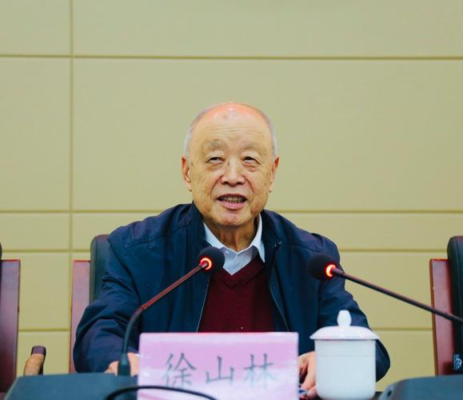
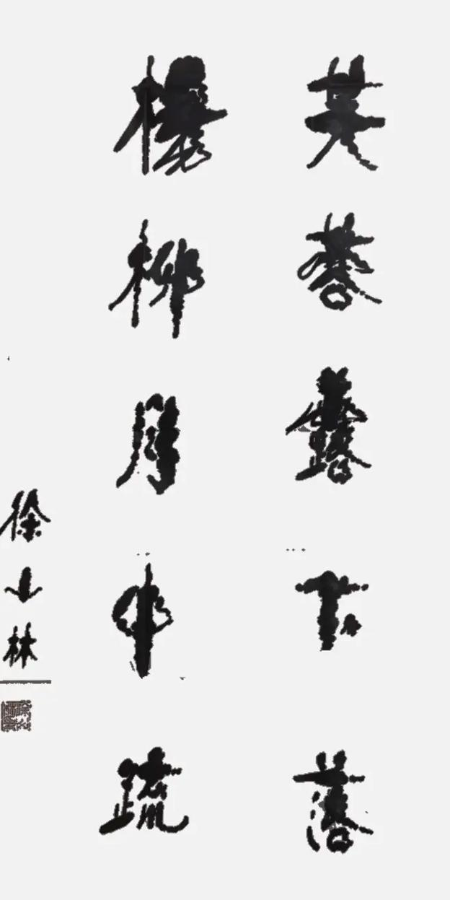

1935 · 陕西安康 · 中国共产党员
陕西省人民政府原副省长 ｜ 陕西省慈善协会创始人
「九秩初心映三秦 大爱无疆润苍生」
从秦巴山地走出的奋斗者，以七十余载公仆精神，深刻影响了一个时代。
徐山林于1935年10月出生于陕西省安康市，自幼成长于秦巴山地，深厚的山区情结使他终身心系基层民生。
青年时期加入中国共产党，以坚定的理想信念投身党的事业，在党的培养下成长为优秀基层干部，积累了扎实的为民服务信念。
先后担任陕西省委委员、陕西省人民政府副省长、省人大常委会副主任、省政协常委会委员等重要职务，施政风格务实，心系民间疾苦。任职期间主持修建了陕西省第一座慈安桥（赵沟慈安桥）。
卸任行政领导职务后，徐山林以更大的热情投身慈善，牵头创建陕西省慈善协会并出任首任会长，标志着陕西现代慈善事业的正式起步。
年逾八旬，亲力亲为推动"汉唐健康工程"，连续5年为低收入群体提供医疗救助。同期将毕生珍藏悉数捐赠家乡安康，创建"藏一角博物馆"。
举办个人书法作品展，展出原创诗词书法30余幅，以翰墨为载体传递人文精神，引发社会广泛关注与赞誉。
年届九十，发表《九秩随感》，以深邃的人生感悟回顾峥嵘岁月，表达对祖国、对人民的赤子之情，展现了老一辈共产党员的精神境界。
以一颗赤子之心，用二十八年时光，将陕西慈善从无到有、从小到大。
"陕南建桥、陕北修水"，因地制宜解决两地群众最迫切的出行与用水难题，是协会早期最具代表性的品牌项目，惠及数以万计的山区百姓。
"扶贫扶智、助学助医助残"——五位一体综合援助体系，精准对接困难群众核心需求，通过物质与精神双重扶持，帮助弱势群体重建信心。
2020年启动，为期五年，专项为低收入患者提供医疗救助。寓意"以健康之道，续盛世之风"，是徐山林晚年最重视的惠民工程之一。
2024年8月，在淳化县第二届慈善大会上提出创建全省首个"慈善之县"的倡议，推动慈善资源精准下沉至基层。
持续支持教育慈善，通过奖学金、校舍建设、教学物资捐赠等方式，帮助贫困地区儿童获得平等受教育的机会。
将残障人士的救助列为长期项目，提供辅具捐助、技能培训、就业引导等一体化援助，倡导社会对残障群体的包容与尊重。
1996年，徐山林亲手创立陕西省慈善协会，担任首任会长，将其培育成陕西最具影响力的慈善组织。协会在他的引领下建立起完整的制度化运作格局，形成"募集—管理—使用—监督"全链条机制。时至今日，他以终身名誉会长身份继续关心和指导协会工作，其慈善精神已深深融入协会的基因之中。
笔墨间流淌的家国情怀，以诗词与书法为载体，记录时代印记，传递人文温度。
徐山林不仅是公益慈善的躬行者，更是一位笔耕不辍的文人。他将书法视为心灵净化与文化传承的载体，数十年坚持习字，形成了端庄遒劲、气韵生动的书法风格。
2023年举办个人书法作品展，展出原创诗词书法作品30余幅，每一幅皆发自心声，融家国情怀、人生感悟与自然山水之美于一炉，观者无不动容。
藏一角博物馆中专设"诗词书法展厅"，收录了多位著名书法家为其诗作创作的书法作品，形成了独特的"诗书合璧"文化景观。
《老屋杂谈》专程捐赠给家乡安康，寄托了他对故土的深沉眷恋与感恩之情。《九秩随感》则以亲历者视角为后人留下了宝贵的精神财富。

慈心济世将毕生珍藏无私捐赠故土，让历史留存，让文化永续，让后人共享。
"藏一角"由徐山林亲自命名，寓意"收藏历史的一个小角落"。徐山林自幼热爱收藏，数十年如一日积累了邮票、钱币、书画、古籍、票证、拓片、文房、手卷、民俗工艺品等珍贵藏品。晚年，他将这批倾注了毕生心血的珍藏悉数捐赠给家乡安康，并委托相关机构建成博物馆，向社会公众开放，让这些见证中华历史与文化的珍品得以惠及社会、泽被后人。
藏一角博物馆是徐山林慈善精神的又一延伸——将物质财富转化为文化公共财富，让全体市民共享历史的馈赠。馆中藏品跨越邮政史、货币史、书法艺术、民俗文化等多个领域，是一部浓缩的中华文明史。徐山林将这一切无偿捐赠，充分体现了他"个人快乐是小快乐，群体快乐是大快乐"的人生哲学，也是他大半生"为人民服务"信念的最后结晶。
一个人的信念，点燃了无数人的善心；一个组织的力量，改变了千万人的命运。
以九十年的人生智慧，给出了关于如何老去的最美答案。
徐山林不仅是理念的提出者，更是最有说服力的践行者。年逾八旬依然奔走于慈善一线，参与公益论坛、走访慈善项目、举办书法展览、捐建博物馆、撰写文章著述……他用行动证明：晚年生命同样可以充实而有意义，老年人的价值绝不因年龄而消退。他的"四老"哲学，是一代共产党人乐观豁达精神的生动体现，也为中国老龄化社会的健康发展提供了宝贵的精神参照。